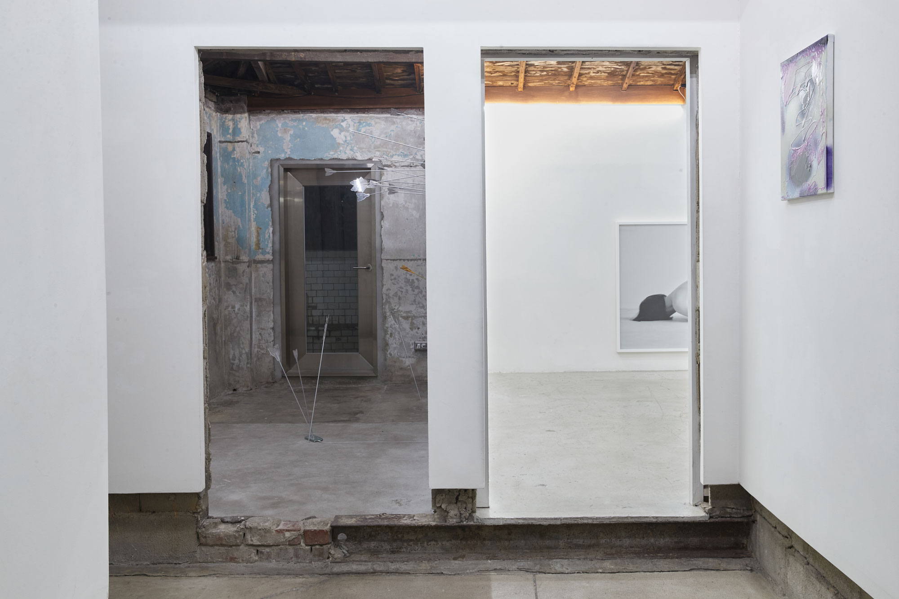
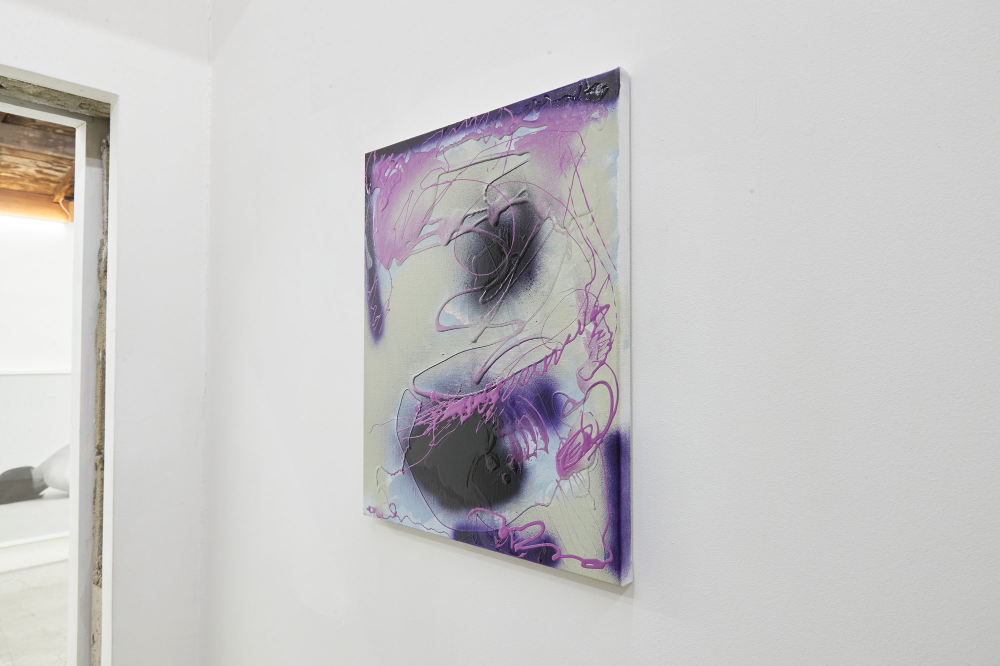

Don’t read me
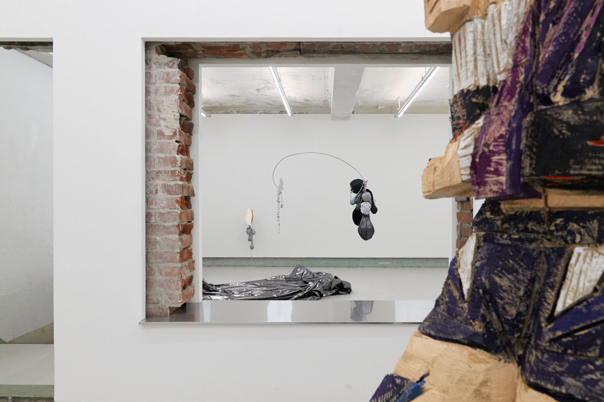
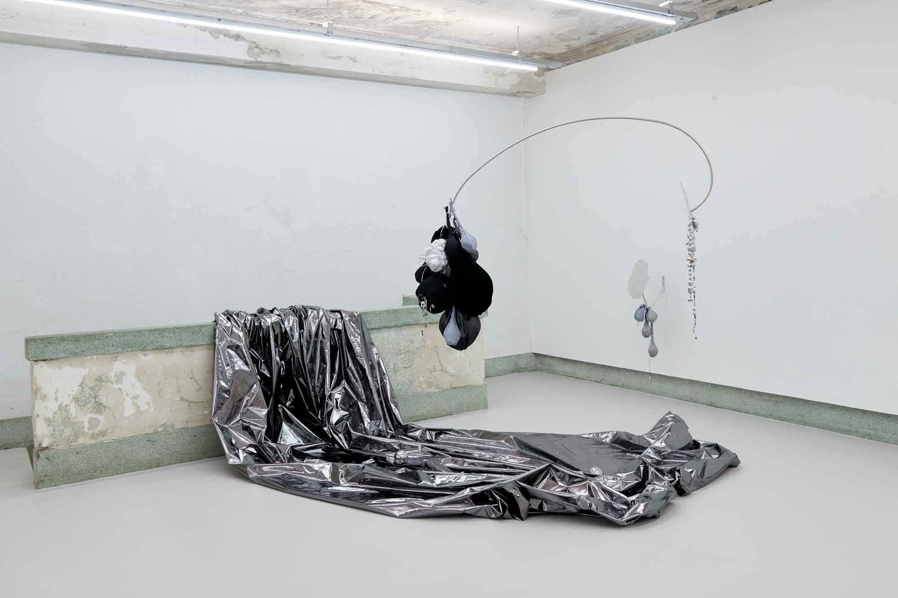

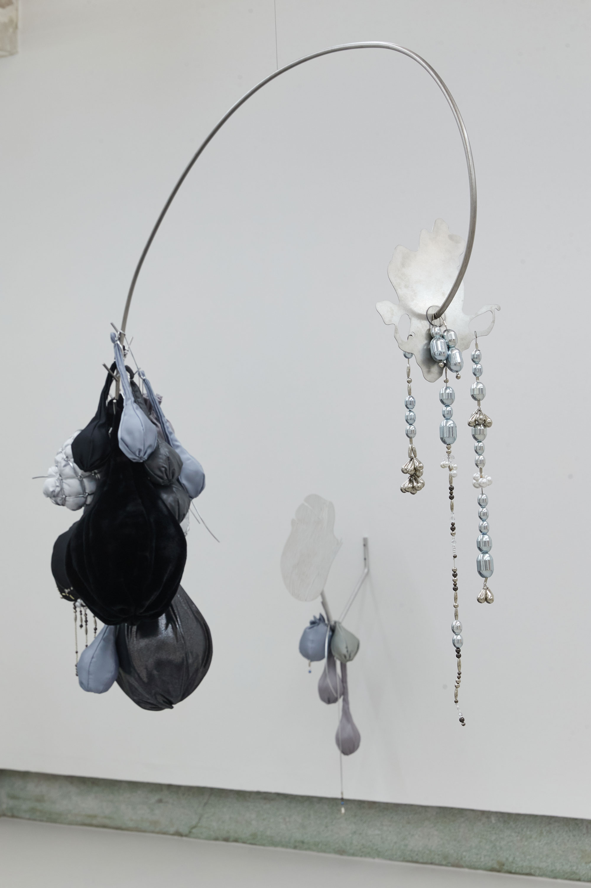
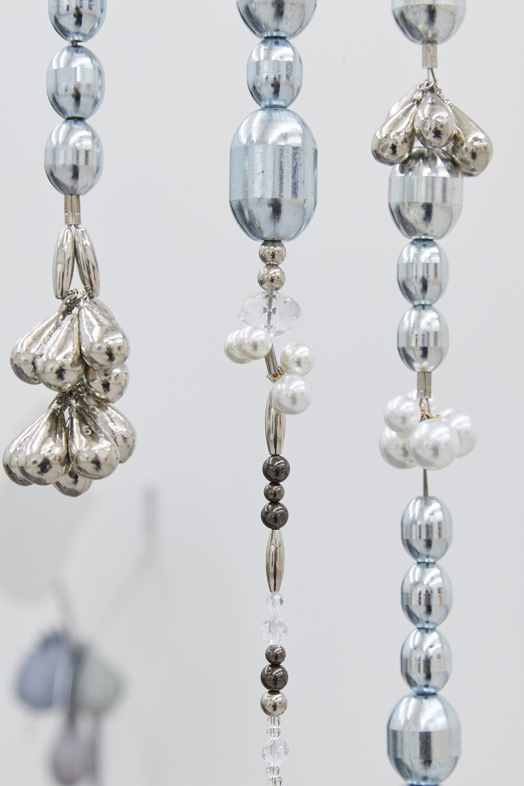
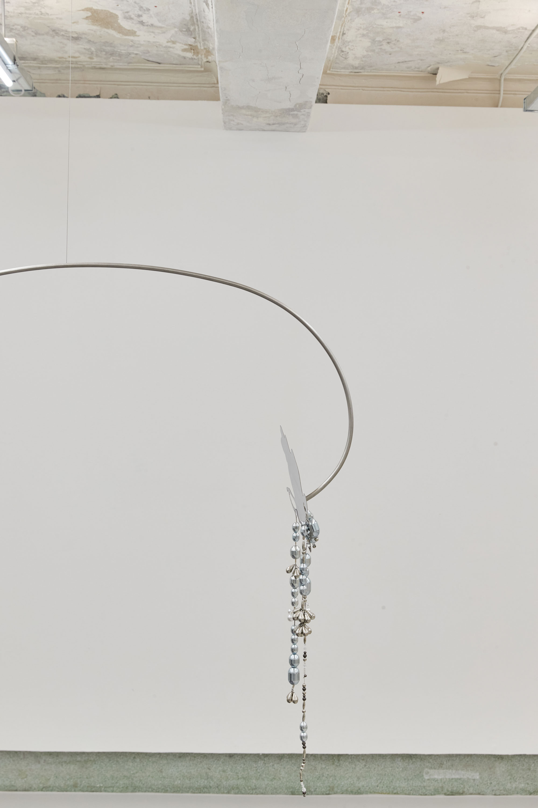
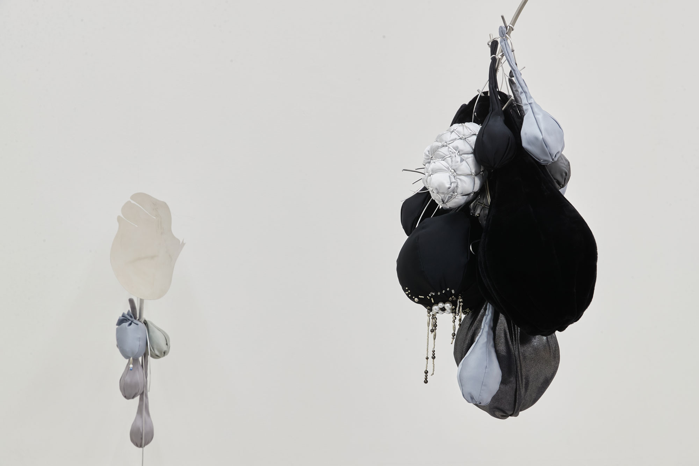
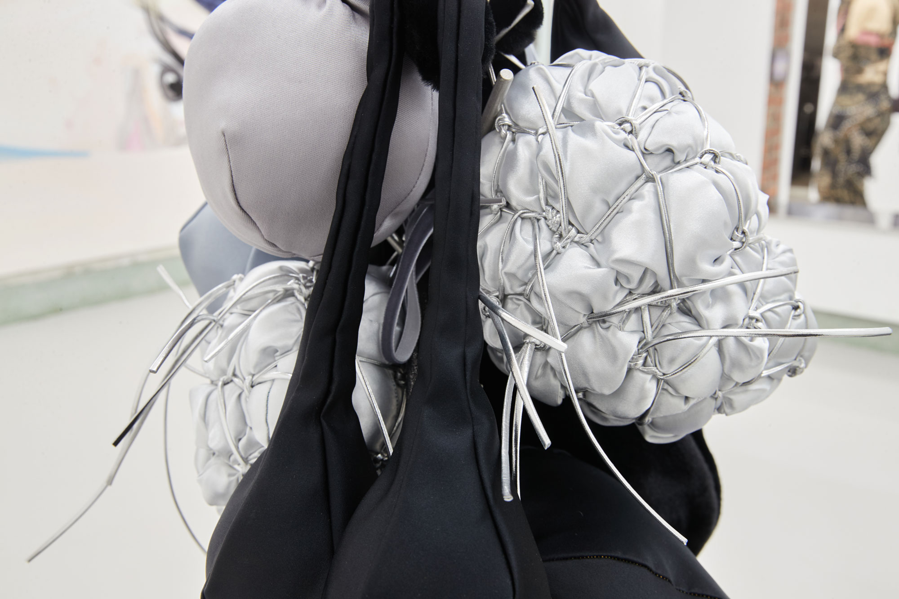
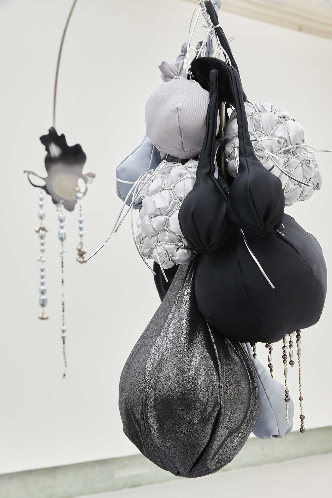


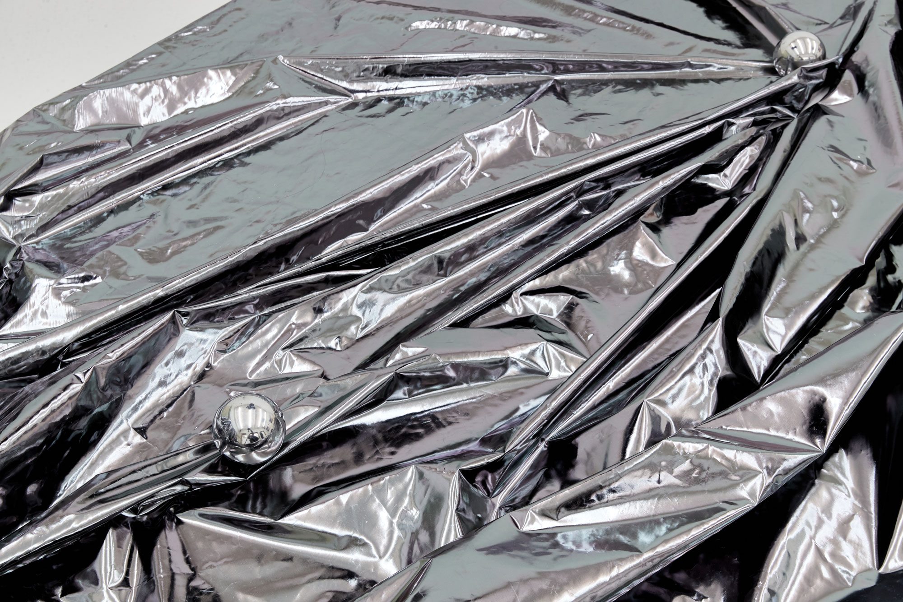

Ziggy Stardust: 자기애와 배반의 시간들
참여작가
정희승, 정이지, 듀 킴, 이동훈, 류성실 , 우한나
2022.03.25 ~ 2022.04.23
N/A 엔에이
서울특별시 중구 창경궁로 5길 27 2-3층
화요일 ~ 토요일 12:00 ~ 19:00 (월, 일 휴관)
“나는 나의 일부만을 사람들에게 보여주는 법을 배우면서도
나의 본질을 배반하지 않기 위한 혼란스럽고 불안정한 길을 걸었다.”
우리가 사유라는 형태로 고민하고, 상상하고, 꿈꾸고, 스스로를 납득하는 창작의 시간들은 기본적으로 자아 실현을 근간에 두고 있다. ‘작가’라는 존재는 자기와의 싸움에서 벌어지는 혼돈의 내적 갈등으로부터 떨어져 나온 작업에 독립적인 세계관을 구축하고, 정체성을 개입시켜 진화해가며, 다시 작업이 자신을 향해 질문을 던지는 숙명의 시험대 위에 서게 된다.
예컨대, 20세기 데이빗 보위는 지기(Ziggy)라는 페르소나를 자신에 투영했고, 21세기 케이팝의 에스파는 분신과 경험의 양면을 토대로 각자의 동일한 캐릭터를 광야의 ‘플랫(Flat)’에 동기화 하여, 실재와 가상의 두 가지 육신의 페르소나를 동등한 선상에 놓았다. 또한, 예능인이 자신의 다양한 부캐(부 캐릭터)를 만들어 복수의 포지션으로 캐릭터의 경계를 열고 닫는 유연함은 표면적이면서 동시에 ‘자아(自我)’라는 의식 이면에 탄탄하게 혹은 불안정하게 작동하도록 한다.
이같은 일종의 ‘아티스트십(Artistship)’은, 예술 영역의 창작자들에게 있어서 기본적으로 담고 있는 원리가 유사하면서도 한편으로는, 셀프 선언적인 방식으로 작동하면서 알터 에고(alter ego)가 밀접하게 연결되어 내밀한 자아로 집적된 끝없는 갈등과 역설 위에 놓인다. 이렇듯, 작가는 존재의 미명하에 자기애 혹은 자기 불신의 관계 속에서 열망하는 것과 극복하고자 하는 방향성 사이에 애증의 관계를 만들어내므로 자신과 마주하고 다시 거리를 둔다.
전시 Ziggy Stardust 는 기승전결이 있었던 부캐에 빌어 완벽함과 동시에 오작동하는 자아를 인식하는 궁극의 페르소나에 주목한다. 전시 제목 “지기 스타더스트(Ziggy Stardust)”는 보위의 앨범 〈The Rise and Fall of Ziggy Stardust and Spiders from Mars〉(1972) 중 아홉 번째 트랙에 있는 제목으로, 무대 뒤에 심리적 공포를 안고 있던 자아가 세상 밖으로 등장하면서, 끝없는 주변의 관심 속에 지구의 마지막 순간 동안 불나방처럼 자아를 발산하다 몰락하는 이야기의 중심부에 있다.
열한 개의 트랙이 수록된 음반은 지구 멸망이 다가오는 시점의 시나리오에서 시작되어 외계의 페르소나가 선구자처럼 등장해 메세지를 전파하고 패망하는 종말론적 서사의 흐름으로 구성된다. 여기서 지기(Ziggy)가 그토록 상징적이었던 것은 작업과 그로부터 파생된 것들, 그리고 무대를 통해 자신이 만들어 놓은 시공의 서사 속에 또 다른 자아에 몰입하고 자기 희생과 더불어, 끝끝내 페르소나와 거리를 둠으로써 부 캐릭터를 실현했다는 점이다.
보위가 만들어낸 허구 속 자아는 교묘하게 현실과 음악 속 서사를 오가며 실존하는 자아에 페르소나를 대입시키고 이를 현실화했다. 그러나 페르소나가 현실 속 자아를 차지하는 순간 둘의 균형이 깨지면서 어느 한 쪽 영역에 제대로 서질 못할 확률이 크다. 여기서 무게가 한 쪽으로 치우치면서 작동하는 희열과 불행의 주기는, 어쩌면, 현실로 돌아왔을 때 내면 깊숙하게 찾아오는 공허함과 어둠 속에서 접하는 자기애와 연민, 그리고 자기 혐오에서 오는 도피일 것이다.
Ziggy Stardust는 동료 작가의 작업관에서 투영되는 요소들을 통해 작업을 향한 태도와 역할을 피사체에 담은 작가의 초상(정희승)과 작가로서의 정체성과 현실의 간극을 내밀하게 공유할 수 있는 주변인을 페르소나로 지목해 자기를 투영(정이지)하는 바깥 영역에서 자아를 돌아보고 모색한다.
반면에, 냉정함과 연민의 양가적 속성을 충돌하는 내적 갈등으로 내면화 및 신체화(우한나)하고, ‘~되기’의 퀴어적 태도에 주목(듀킴)하는 페르소나를 향한 신체의 이동, 그리고 분신 개념이 뚜렷한 특정 걸그룹의 실재 인물과 아바타를 3인칭 시점으로 바라봄으로써, 캐릭터로부터 파생된 요소를 탐구(이동훈)한다.
나아가, 작가가 작업 전반에 수행했던 아바타와 유사하게 닮은 가상 인물을 등장시켜 사회적으로 뿌리내린 왜곡된 관습과 욕망의 시나리오에서 모두의 페르소나일 수도, 혹은 페르소나조차 작동할 수 없을 실체 없는 여행기를 체험(류성실)하도록 함으로써, 전시 전반이 자아와 페르소나 사이에서 갈팡질팡하는 블랙 코미디의 감각으로 엮이고 주고받는다.
‘심장을 찌르고 꿰매는,’
우한나는 모빌 구조의 설치 조각 (Floating Well, 2022)을 시도하므로 작업에서 안고 가야하는 양가적인 조건들의 동등한 상태에서 내적 갈등이 필연적으로 따라올 수 밖에 없는 작가의 숙명에 대해 이야기한다. 이성과 감성, 좌뇌적 사고와 우뇌적 사고의 영역에 생각들을 토스하는 과정에서 선택의 순간들이 축적되면서, 그것이 곧 자아 혹은 알터 에고의 모양새를 만들어낸다. 그리하여, 양극단에서 고민하는 수많은 자아들은 자신을 투영하는 신체기관 혹은 양성의 신체를 떠오르게 하는 구조로 구현하면서 본능적으로 서로 비등해야만 한다는 관성같은 것에 놓이게 된다. 결국에는 작가가 처한 자기 모순의 과정들은 신체로부터 파생된 각기 다른 형태와 무게의 부산물에 의해 즉흥적으로 포착한 실루엣의 거울과 마주보면서 투영된다. 반면에, 작가가 납득의 시간들을 거치기 위해 고민하는 행위 자체가 균형을 만들어가는 과정임을 스스로 받아들이는 순간에, 우한나의 시선은 객관화되어 오롯이 자신과 관객의 상만 담을 수 있는 거울 부조 조각(See Me Again, 2022)과 마주하게 된다. 모양자로 아무것도 지칭하지 않는 외곽선을 여러 차례 긋고, 수정을 통해 우연치 않게 만들어낸 심장 모양의 거울 조각은 우리의 의식 깊숙이 고정된 페르소나와 변화할 수 밖에 없는 자아들을 들여다보도록 한다(Show You, 2022). 본 전시에서 기존 작업과 화려하게 사용되었던 색을 제거하고 다양한 천의 질감과 광도에 집중한 무채색 덩어리의 표면은, 그간 미숙하고 시끄러웠던 오합지졸의 미묘한 차이들을 더 명징하게 들여다볼 수 있도록 한다.
기획, 글 추성아